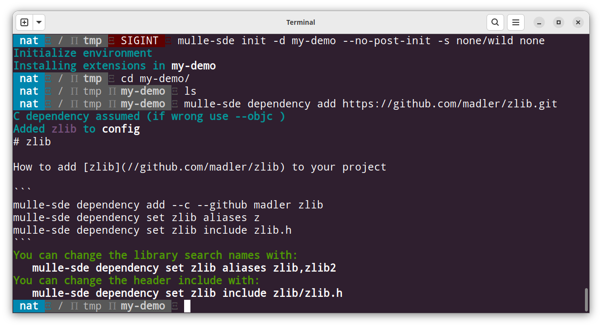
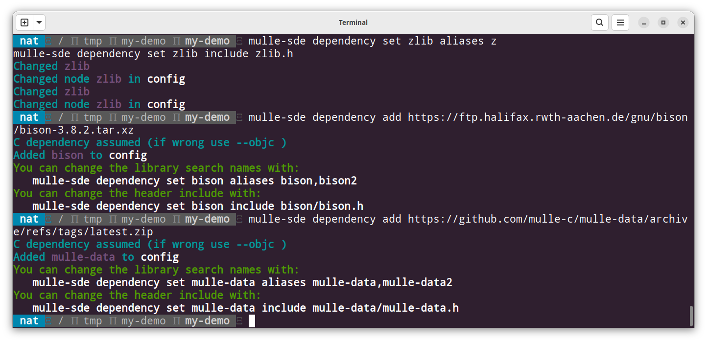
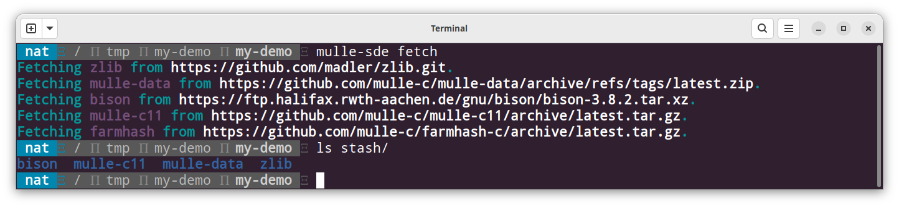
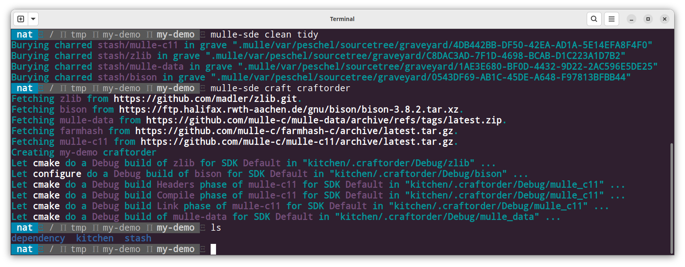

🚬 Fetch and build
With project composition one can embed third party code directly into a project. But often a project needs third party code, that builds separately, possibly with a different build system (say autoconf instead of cmake). More often than not this third party code is a github or gitlab repository, that needs to be downloaded and built. It will typically be a library to link the project against and one or more header files, which will be included in the project source code.
mulle-sde will fetch these dependencies and will build them
and install them into a local dependency folder. That way you have access
to the headers and libraries in a uniform way.
Quick Demo
Setup
Mix and match a few dependencies:
| Dependency | Build System | SCM | URL |
|---|---|---|---|
| zlib library | cmake | git | https://github.com/madler/zlib.git |
| bison | autoconf | tar | https://ftp.halifax.rwth-aachen.de/gnu/bison/bison-3.8.2.tar.xz |
| mulle-data | mulle-sde | zip | https://github.com/mulle-c/mulle-data/archive/refs/tags/latest.zip |
For dependency building only the most barebones, unencumbered virtual environment is needed to store a few settings. Lets create a new project “my-demo”, to be filled with the main code later on:
mulle-sde init -d my-demo --no-post-init -s none/wild none
cd my-demo
Now add the first dependency, a git repository. Dependency order may be important, but it isn’t in this case.
mulle-sde dependency add https://github.com/madler/zlib.git
From the URL, mulle-sde will try to figure out what it needs to do. Sometimes more information needs to be given with additional command line options, but not in this case.

As this is a demo, we immediately hit the best case, which is that zlib is a known dependency, that has some documentation! The documentation is provided by the craftinfo repository.
Clearly the vision of the craftinfo repository is, that millions of developer work together in harmony on craftinfos, so that all possible dependencies can be added without effort. It’s not quite there yet though.
Anyway let’s use the suggestions and continue:
mulle-sde dependency set zlib aliases z
mulle-sde dependency set zlib include zlib.h
Now add the next dependency bison, which is a tar archive:
mulle-sde dependency add https://ftp.halifax.rwth-aachen.de/gnu/bison/bison-3.8.2.tar.xz
And add mulle-data, which is a mulle-sde project in a zip archive:
mulle-sde dependency add https://github.com/mulle-c/mulle-data/archive/refs/tags/latest.zip

Fetch and Craft
If the URLs are wrong or stale in some way, the fetch might not work. Otherwise there is no expectation of failure here:
mulle-sde fetch

As mulle-data is a mulle-sde project, it can advertise its dependencies (mulle-c11). So dependencies of true mulle-sde dependencies will be fetched as well. Everything ends up in a directory named “stash”. The separate “fetch” step is not really necessary, as the craft step will fetch what is needed. So for demonstration let’s do it all over again:
mulle-sde clean tidy
mulle-sde craft craftorder

The contents of the dependency/Debug are analogous to the contents of
a /usr/local folder, but local to your project:
Find the location of the
dependencyfolder withmulle-sde dependency-dir, if you can’t find it in your project.
$ tree -L 3 dependency
dependency/
├── Debug
│ ├── bin
│ │ ├── bison
│ │ ├── mulle-fnv1a
│ │ └── yacc
│ ├── include
│ │ ├── mulle-c11
│ │ ├── mulle-data
│ │ ├── zconf.h
│ │ └── zlib.h
│ ├── lib
│ │ ├── libmulle-data.a
│ │ ├── liby.a
│ │ ├── libz.a
│ │ ├── libz.so -> libz.so.1
│ │ ├── libz.so.1 -> libz.so.1.2.13
│ │ └── libz.so.1.2.13
│ └── share
│ ├── aclocal
│ ├── bison
│ ├── doc
│ ├── info
│ ├── locale
│ ├── man
│ └── pkgconfig
└── etc
└── craftorder-Default--Default--Debug
You can get arguments for the linker command line from mulle-sde after a little tweaking of the bison dependency. The produced libary by bison is called ‘liby.a’ and not the default ‘libbison.a’ as would be expected. This can be corrected though:
mulle-sde dependency set bison aliases y
$ mulle-sde linkorder
-L'/tmp/my-demo/dependency/Debug/lib'
-Wl,--export-dynamic -lz
-Wl,--export-dynamic -ly
-Wl,--export-dynamic -lmulle-data
You can also get include source code for your source files from mulle-sde with. Again bison is a bit weird, as it produces no header files. To avoid an error in the next step, lets mark it as having no header:
mulle-sde dependency mark bison no-header
$ mulle-sde headerorder
-isystem '/tmp/my-demo/dependency/Debug/include'
#include <zlib.h>
#include <mulle-data/mulle-data.h>
Final Words
The fetching of archives and git repositories is done with mulle-fetch. mulle-domain provides heuristics based on URLs. mulle-make is used to build the dependency.